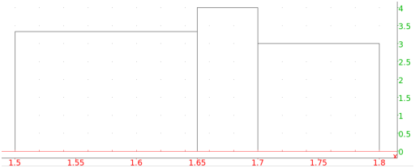
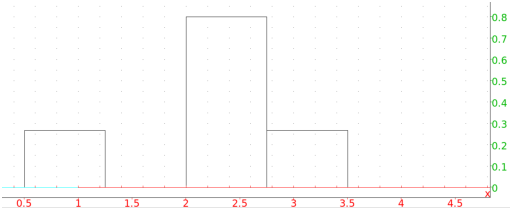

8.1.10 Histograms: histogram histogramme
Given a list of intervals and a number of points in each interval,
such as is given by the output of the classes command
(see Section 8.1.9), a histogram is a graph consisting of a
box over each interval, where the height of each box is proportional
to the number of points and the total area of the boxes is 1.
The histogram command draws histograms. The data can be
sorted or unsorted.
histogramme is a synonym for histogram.
With sorted data:
-
histogram takes one argument:
L, a list whose elements lists of a range a..b and a positive
integer.
- histogram(L) draws a histogram for the data.
Example
Input:
histogram([[1.5..1.65,50],[1.65..1.7,20],[1.7..1.8,30]])
Output:

With unsorted data:
-
histogram takes one mandatory argument and two
optional arguments.
-
L, a list of numbers.
- Optionally, a and b, numbers.
- histogram(L ⟨ a,b⟩) returns the
histogram for classes(L ⟨ a,b⟩) (see
Section 8.1.9).
Example
Input:
histogram([1,2,2.5,2.5,3],0.5,0.75)
Output:
